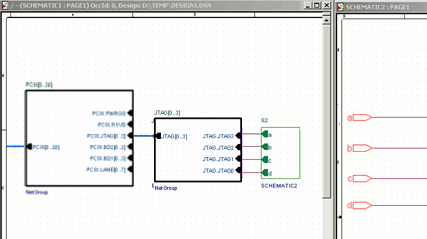
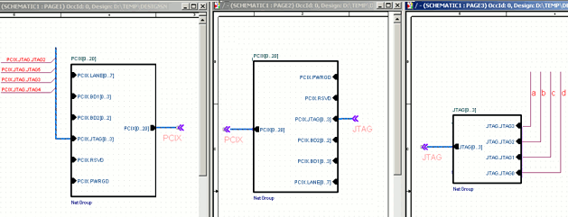
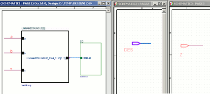

As the name suggests, a NetGroup allows you to group
together a heterogeneous group of signals. You can use this
feature to easily connect a large number of signals on a
page, across pages in a design and even across a hierarchy.
This section describes NetGroup connectivity using four
scenarios. Two scenarios for named NetGroups and two
scenarios for un-named NetGroups.
To connect signals on the same page to a NetGroup, you can
use the Auto-connect to NetGroup feature of Capture . For
details, see Auto-Wire
to NetGroup.
If you short buses and NetGroups together, the order of
preference depends on factors like the width of the bus or
NetGroup. This preference defines the resultant object (bus
or NetGroup), Winning bus, and the flat nets generated out
of the short. For details (covering a set of scenarios),
see Net Generation
Scenarios.
In this section:
Named NetGroup Connectivity
Using named NetGroups you can connect signals across pages in a hierarchical design. You can also use named NetGroups to connect signals across a page at the same level of a hierarchical design or across pages in a flat design.
Using a Named NetGroup to connect signals across a hierarchy
A NetGroup enables the connectivity of signals across the
levels of a hierarchical design.
Scenario 1
In this example, the signals at the top level
(SCHEMATIC1:PAGE1) of the design need to be connected to
signals on the page SCHEMATIC2:PAGE1 at lower levels of the
hierarchy. 
-
The signals on SCHEMATIC1:PAGE1 are first tapped into a
large NetGroup, PCIX. This NetGroup contains the signals
of this page that needs to be connected to pages across
the hierarchy.
Four signals (a, b, c & d) need to be connected from the top level to the signals on SCHEMATIC2:PAGE1. - These four signals are first placed in a NetGroup JTAG that is then placed, as a member, in the large NetGroup PCIX.
- Next, the JTAG NetGroup is placed separately onto the SCHEMATIC1:PAGE1 page.
- The PCIX.JTAG NetGroup port is connected to the separate JTAG NetGroup.
- Each NetGroup port of the JTAG NetGroup is then connected to the corresponding ports, a, b, c & d of the hierarchical block of SCHEMATIC2.
-
Finally, on the page SCHEMATIC2:PAGE1, four off-page
connectors, a, b, c & d, are created to tap out the
corresponding signals from SCHEMATIC1:PAGE1.
Scenario 2
In this example, the four signals, a, b, c & d are connected to signals on SCHEMATIC3:PAGE1 using a NetGroup off-page connector.

- Again, the signals on SCHEMATIC1:PAGE1 are first tapped into a large NetGroup, PCIX, containing 19 signals.
- In this case, the PCIX.JTAG NetGroup port is connected to the JTAG hierarchical port of the SCHEMATIC3 hierarchical block.
- Finally, on SCHEMATIC3:PAGE1, the JTAG signals are tapped out by placing a JTAG NetGroup connector.
Using a Named NetGroup to connect signals across pages in a design
A NetGroup also increases the ease of the connectivity of
signals across the pages of a design.
In this example, you will connect signals across pages in
a flat design.

-
The signals on SCHEMATIC1:PAGE1 are first tapped into a
large NetGroup, PCIX, containing 19 signals. This
associated NetGroup definition contains all the signals
of this page that need to be connected to pages across
the design.
Four signals need to be connected from PAGE1 to PAGE3 on SCHEMATIC1. - On PAGE1, these signals are connected via a bus to the PCIX.JTAG NetGroup entry point.
- The PCIX NetGroup off-page connector creates the outlet for the signals of the NetGroup.
- Another instance of the NetGroup is placed on SCHEMATIC1:PAGE2 to tap out the signals from SCHEMATIC1:PAGE1. To build the connectivity of these signals on SCHEMATIC1:PAGE2, place a NetGroup off-page connector PCIX on the page.
- The signals are part of the JTAG NetGroup (included within the PCIX NetGroup). To tap out these signals, connect a NetGroup off-page connector to the PCIX.JTAG NetGroup entry in the PCIX NetGroup on SCHEMATIC1:PAGE2.
- Next, on SCHEMATIC1:PAGE3, place an instance of the JTAG NetGroup.
- Also, place a JTAG off-page connector to the JTAG NetGroup port.
- Finally, tap out the signals from the NetGroup entry points to complete the signal connectivity.
Un-named NetGroup connectivity
Similar to named NetGroups, you can also use un-named NetGroups to connect signals across pages in a hierarchical design. Again, as in named NetGroups, in un-named NetGroups, you can connect signals across a page at the same level of a hierarchical design or across pages in a flat design.
Using an Un-named NetGroup to connect signals across a hierarchy
Along with using named NetGroups to connect signals on
different levels of a hierarchical design, you can also use
un-named NetGroups. We use unnamed NetGroup to group
multiple signals on the fly. This implies that we create
(in the design) any signals we want to include in the
NetGroup.
In this example, the signals, a, b, and y, at the top
level (SCHEMATIC1:PAGE1) of the design are to be connected
to corresponding signals on the page, SCHEMATIC3:PAGE3 at a
lower level of the hierarchy.

-
An unnamed NetGroup is first placed on
SCHEMATIC1:PAGE1.
This is an empty associated NetGroup definition so we still need to add members to this NetGroup. - Specify three scalar members for the NetGroup. These will be used as entry points from the signals a, b, and y to the unnamed NetGroup. To this, add three hierarchical pins and name them a, b, and y.
- Then connect the three signals to the NetGroup entry points.
- The NetGroup port is then connected to a hierarchical port, named DES, of the SCHEMATIC2:PAGE1 hierarchical block placed on SCHEMATIC1:PAGE1.
- The NetGroup port DES is placed on SCHEMATIC2:PAGE1.
Using a Un-named NetGroup to connect signals across pages in a design
An unnamed NetGroup can also be used to connect signals
across pages at the same level of a design.
In this example, the signals on SCHEMATIC1:PAGE1 of the
design need to be connected to signals on
SCHEMATIC1:PAGE2.

-
An unnamed NetGroup is first placed on
SCHEMATIC1:PAGE1.
This is an empty associated NetGroup definition so we still need to add members to this NetGroup. - Specify three scalar members for the NetGroup. These will be used as entry points from the signals a, b, and y to the unnamed NetGroup. To this, add three hierarchical pins and name them a, b, and y.
- Then connect the three signals to the NetGroup entry points.
- Since we are connecting signals across pages at the same level of a design, the NetGroup is connected to a NetGroup off-page connector UN.
- To build the connectivity of these signals on SCHEMATIC1:PAGE2, place a NetGroup off-page connector UN on the page.
- Finally, on SCHEMATIC3:PAGE3, create off-page connectors for the signals, a, b, and y.